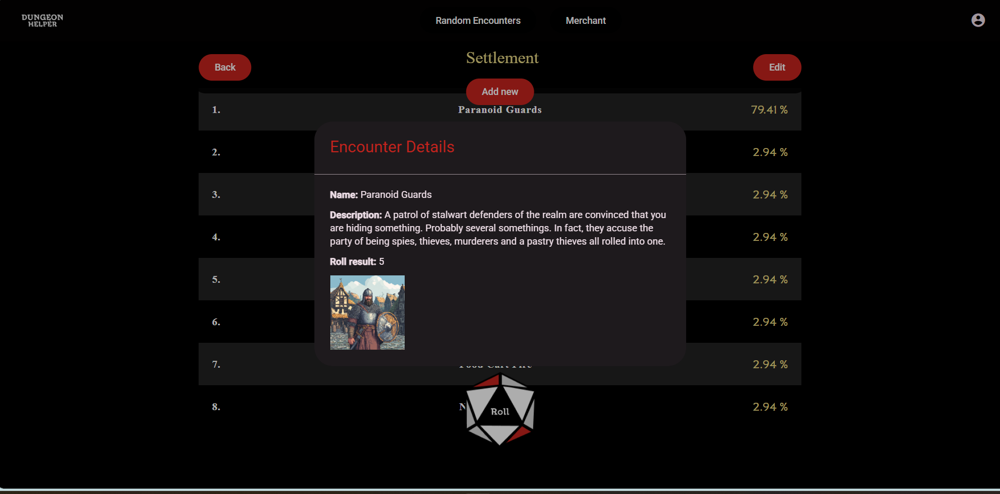
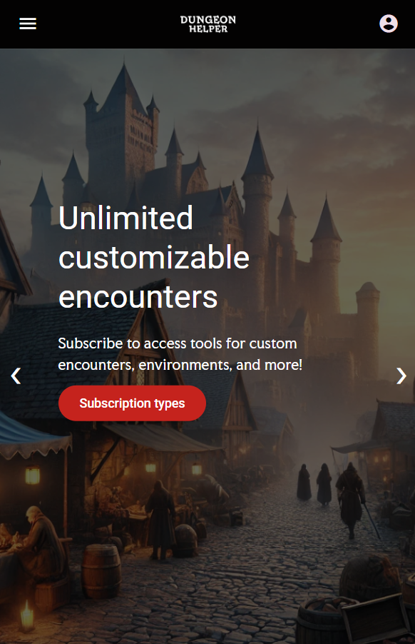
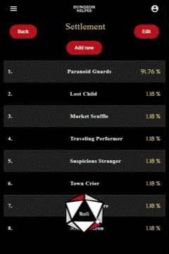
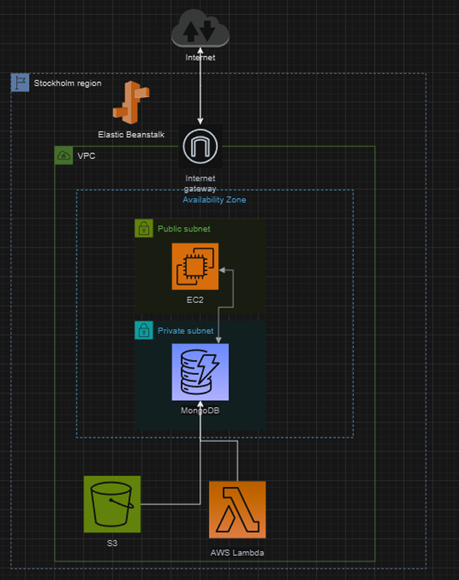

Ticorporate projekti
Projektissa toteutimme Angularilla pöytäroolipeleihin suunnatun apusovelluksen, jota pelaajat voivat hyödyntää pelin aikana esimerkiksi erilaisten tilanteiden ja tapahtumien generointiin. Sovellus toteutettiin ryhmätyönä ja julkaistiin AWS Elastic Beanstalk -palveluun.
Vastasin projektissa pääasiassa sovelluksen käyttöliittymän toteutuksesta, kuten HTML-rakenteesta ja CSS-tyyleistä. Lisäksi toimin projektin pilvivastaavana, jolloin vastasin sovelluksen viemisestä AWS-pilviympäristöön ja sen julkaisemisesta Elastic Beanstalkin avulla.
Projektin kautta sain käytännön kokemusta Angular-kehityksestä, käyttöliittymien toteuttamisesta sekä sovelluksen julkaisemisesta AWS-pilvipalveluun.